Numerical Optimization Routine¶
In [OMYS17] it is suggested to use the ESS algorithm in the MEIGO toolbox to solve the constrained global optimization problem. Although evolutionary algorithms such as ESS can perform very well, they often need to be coupled with multi-start procedures to produce sensible results for complex reaction networks. In addition to this, to use the MEIGO toolbox within Python, a Python interface to R is required. This is not desirable, and for this reason we have constructed our own multi-start routine that compares favorably with the ESS routine for a general class of reaction networks.
The optimization routine utilizes two steps to achieve a minimization of the objective function:
- Multi-level feasible point method
- Hybrid global-local searches beginning at the feasibility points
Feasible Point Method¶
Both the mass conservation and semi-diffusive approach have constraints on the decision vector provided. These extra constraints coupled with the global optimization problem are difficult to solve and can often require many multi-starts to find a solution. This is due to the fact that multi-start routines often start at randomly generated values pulled from a uniform distribution, which do not satisfy the constraints. One way to begin the multi-start procedure in favorable positions is to generate starting points that already satisfy the constraints of the problem. We do this by conducting a feasible point method.
The feasible point method attempts to minimize the following objective function
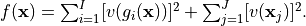
where 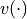 are violation functions for the constraint equations, 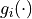, and variable bounds, 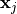. The violation functions are defined as follows
| Constraint Type | Violation Function |
|---|---|
| 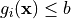 | 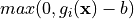 |
| 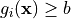 | 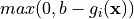 |
| 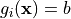 | 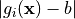 |
| Variable Bounds | Violation Function |
|---|---|
| 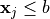 | 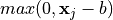 |
| 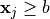 | 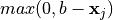 |
| 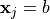 | 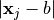 |
this is called a penalty method and is outlined in Chapter 18 of [Chi14]. For the mass conservation approach
the constraint equations are defined as 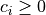, where  are the species’ concentration expressions
derived from the equilibrium manifold. The variable bounds for this approach are then defined by the bounds established
for the decision vector. For the semi-diffusive approach the constraint equations are defined as
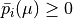 if is a key species. Note that the constraint of 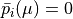
if is not a key species is not considered in the optimization directly as they are satisfied by direct
substitution. The variable bounds are again the bounds established for the decision vector. Notice that in both
approaches we do not consider the rank constraints. In practice these are very difficult to satisfy via direct
optimization. However, if the objective function is minimized, then the rank constraints have a very high
likelihood of being satisfied.
are the species’ concentration expressions
derived from the equilibrium manifold. The variable bounds for this approach are then defined by the bounds established
for the decision vector. For the semi-diffusive approach the constraint equations are defined as
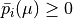 if is a key species. Note that the constraint of 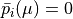
if is not a key species is not considered in the optimization directly as they are satisfied by direct
substitution. The variable bounds are again the bounds established for the decision vector. Notice that in both
approaches we do not consider the rank constraints. In practice these are very difficult to satisfy via direct
optimization. However, if the objective function is minimized, then the rank constraints have a very high
likelihood of being satisfied.
Once the penalty function 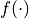 is constructed we can then continue by minimizing it. We do this by conducting a multi-level multi-start method. First we generate a user defined amount of decision vectors using a random uniform distribution and then put them in the user defined bounds. Next, we minimize using SciPy’s SLSQP function with a tolerance of 1e-16. Although it is often sufficient to just run SLSQP, in some cases if a minimum of zero is not achieved by this run, it is beneficial to also perform a minimization using Nelder-Mead starting from the minimum point found by SLSQP. To reduce runtimes, we do not run the Nelder-Mead routine if SLSQP returns an objective function value that is sufficiently small.
Hybrid Global-Local Searches¶
Using those decision vectors produced by the feasible point method, we now address the global optimization problem. For the mass conservation approach we let the objective function be:
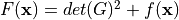,
and for the semi-diffusive approach we let the objective function be:
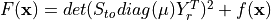,
where  is the objective function formed by the feasible point method. Using the decision vectors
produced by the feasible point method as starting points, we then run SciPy’s global optimization algorithm
Basin-hopping.
In addition to running this global optimization, we employ
Nelder-Mead
as a local minimizer. If the local minimizer returns an objective function value smaller than a user defined value
of sys_min_val, then the result solution array from the minimizer is saved and returned to the user.
is the objective function formed by the feasible point method. Using the decision vectors
produced by the feasible point method as starting points, we then run SciPy’s global optimization algorithm
Basin-hopping.
In addition to running this global optimization, we employ
Nelder-Mead
as a local minimizer. If the local minimizer returns an objective function value smaller than a user defined value
of sys_min_val, then the result solution array from the minimizer is saved and returned to the user.
Pseudocode for Optimization Method¶
Establish bounds for decision vector.
Randomly generate 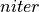 parameter sets of decision vectors within the given bounds, say 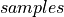.
for 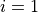 to
Let 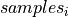 be a starting point for the feasible point method where
- if provides 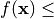 machine epsilon
Run hybrid global-local search for 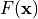 objective function with
as starting point, providing .
Store and function values that are smaller than sys_min_val
- else
- Throw away